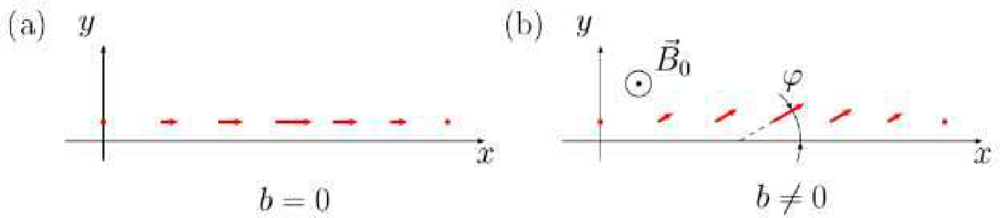

이 문제에서는 강자성 시뮬레이터(Ferromagnetic Simulator) 프로그램을 이용하여 물리량을 계산한다. 자세한 프로그램 설명은 문제 끝에 제공된다.
얻은 수치 값을 엑셀 파일에 기록하되, 각 파일 제목에 해당 문제 절의 번호를 명시한다. 각 열에는 어떤 물리량을 담고 있는지 표시한다. 그래프도 같은 파일에 그릴 수 있다. 답안지에는 계산에 필요한 공식과 풀이를 설명하는 그림을 포함한다. 풀이 과정에서 생성한 모든 파일을 “report” 폴더에 저장한다.
경고! 프로그램은 계산에 수 분이 걸릴 수 있다. 작업 속도를 높이려면 프로그램의 여러 인스턴스를 실행할 수 있다. 한 인스턴스가 계산을 수행하는 동안 다른 인스턴스에서 얻은 그래프를 분석할 수 있다. 나중에 사용할 수 있도록 결과를 저장하는 것을 잊지 말 것.
강자성체(ferromagnet)는 외부 자기장이 없어도 0이 아닌 자기 모멘트를 가질 수 있는 물질이다. 강자성 물질의 상태는 자기 모멘트 밀도 $\vec M$, 즉 자화(magnetization)로 특징지어진다. 평형 상태에서 자기 모멘트 분포는 국소 에너지 최소에 해당한다. 강자성체는 서로 다른 자기 모멘트 방향을 갖는 영역 — 도메인(domain) — 으로 나뉜다. 이 도메인들은 도메인벽(domain wall) — 자화 방향이 바뀌는 전이 영역 — 으로 분리된다.
에너지가 최소가 아니거나 외부 자기장이 가해지면 자화는 시간에 따라 변한다. 자화의 시간 변화는 란다우‑리프시츠‑길버트(Landau–Lifshitz–Gilbert, LLG) 방정식으로 지배된다.
$$\frac{\partial\vec M}{\partial t} = -\gamma\,\vec M\times\vec B_{\rm eff} + \frac{\alpha}{M_0}\,\vec M\times\frac{\partial\vec M}{\partial t}.$$첫째 항은 자기장 속에서의 자화 세차운동을, 둘째 항은 에너지 소산을 기술한다. 여기서 $\vec B_{\rm eff}$는 주어진 점에 작용하는 유효 자기장이다. 유효 자기장은 주어진 점의 자화와 그 이웃의 자화에 의존한다. $\gamma$는 자기회전비(gyromagnetic ratio, 전자의 자기 모멘트와 각운동량의 비), $\alpha$는 무차원 길버트 감쇠 상수(Gilbert damping constant), $M_0$는 자화의 크기이다.
강자성체의 에너지 밀도(단위 부피당 에너지)가 자화의 함수 $w(\vec M)$로 알려져 있다고 하자. 유효 자기장은 다음 도함수로 계산할 수 있다.
$$\vec B_{\rm eff} = -\frac{\partial w}{\partial\vec M},$$여기서 벡터에 대한 도함수는 자화 성분에 대한 도함수로 이루어진 벡터이다.
$$B_{{\rm eff},x} = -\frac{\partial w}{\partial M_x},\qquad B_{{\rm eff},y} = -\frac{\partial w}{\partial M_y},\qquad B_{{\rm eff},z} = -\frac{\partial w}{\partial M_z}.$$예를 들어 물질이 외부 자기장 $\vec B_0$에 놓이면, 이에 대응하는 에너지 밀도 기여는
$$\Delta w_B = -\vec M\cdot\vec B_0,$$이고, 이에 대응하는 유효 자기장 변화는 $\Delta\vec B_{\rm eff} = \vec B_0$이다.
이 문제에서는 데카르트 좌표에서 벡터곱에 대한 다음 공식을 사용할 수 있다.
$$(\vec a\times\vec b)_x = a_yb_z - a_zb_y,\qquad (\vec a\times\vec b)_y = a_zb_x - a_xb_z,\qquad (\vec a\times\vec b)_z = a_xb_y - a_yb_x.$$좌표축 $x$, $y$, $z$ 방향의 단위 벡터는 각각 $\vec e_x$, $\vec e_y$, $\vec e_z$이다.
Part A, B, C는 독립적으로 풀 수 있다.
자화가 균일하다고(좌표에 무관) 하자. 단위 벡터 $\vec m = \vec M/M_0$을 정의한다. 여기서 $M_0 = |\vec M|$이다. LLG 방정식은 다음 형태로 쓸 수 있다.
$$\frac{d\vec m}{dt} = -\gamma\,\vec m\times\vec B_{\rm eff} + \alpha\,\vec m\times\frac{d\vec m}{dt}.$$자화는 시간에만 의존하므로 편도함수 대신 전도함수를 쓸 수 있다. 계산을 위해 시간 도함수의 명시적 공식을 갖는 것이 유용하다.
$$\frac{d\vec m}{dt} = -\frac{\gamma}{1+\alpha^2}\,\vec m\times\vec B_{\rm eff} - \frac{\alpha\gamma}{1+\alpha^2}\Big((\vec m\cdot\vec B_{\rm eff})\,\vec m - \vec B_{\rm eff}\Big).$$따라서 자기 모멘트는 유효 자기장 $\vec B_{\rm eff}$를 중심으로 세차운동하며, 자기 모멘트는 점차 자기장 방향으로 정렬된다.
이 부분에서는 정사각형 단면(정사각형 한 변의 크기 $a$)을 갖는 가는 강자성 와이어를 생각한다. 와이어 길이는 $L$이다. 와이어를 $N = L/a$개의 한 변 길이 $a$인 정육면체 셀로 나눈다. 각 셀 안에서 자화 $\vec M_i$는 균일하다고 가정한다. 자화의 크기 $M_0$가 일정하므로, 단위 벡터 $\vec m_i = \vec M_i/M_0$만 지정하면 충분하다. $x$축이 와이어를 따라 향하고, $y$, $z$축은 단면 변을 따른다고 하자.
각 정육면체 셀(한 변 $a$)의 에너지는 다음 항들로 구성된다.
위 표현식들은 에너지 밀도가 아니라 에너지임에 유의하라. 따라서 유효 자기장 $\vec B_{\rm eff}$ 성분을 계산하려면 에너지를 자화에 대해 미분한 뒤 $a^3$으로 나누어야 한다.
다음 매개변수를 갖는 물질을 생각한다.
정육면체 셀의 한 변 크기는 $a = 3.0~\mathrm{nm}$이다.
아래에서 모든 자기장은 $B_{\rm an}$ 단위로, 시간은 $1/\omega$ 단위로 측정하며, $\tau = \omega t$이다. 따라서 무차원 유효 자기장은
$$\vec b_{{\rm eff},i} = m_{i,z}\vec e_z + \beta(\vec m_{i-1} + \vec m_{i+1}) - k_1m_{i,y}\vec e_y + \vec b,$$이고, LLG 방정식은
$$\frac{d\vec m_i}{d\tau} = -\vec m_i\times\vec b_{\rm eff} + \alpha\,\vec m_i\times\frac{d\vec m_i}{d\tau}.$$이방성 에너지는 자기 모멘트가 $z$축과 평행할 때, 즉 $m_{i,z} = \pm1$일 때 최소이다. $m_{i,z} = +1$인 영역과 $m_{i,z} = -1$인 영역 사이의 도메인벽은, 자화 방향이 양의 $z$축 방향에서 음의 $z$축 방향으로 바뀌는 전이 영역이다.
강자성 시뮬레이터 프로그램을 사용하여 도메인벽 내부의 좌표 $x$에 대한 자화 의존성을 연구할 것이다. 초기 시각에 와이어 왼쪽 부분의 자화는 $m_{i,z} = +1$, 오른쪽 부분은 $m_{i,z} = -1$이다. 자화 방향의 급격한 변화는 큰 교환 에너지를 초래하므로, 이 배치는 최적이 아니다. 큰 소산 상수 $\alpha$를 설정하고 계가 시간에 따라 어떻게 변하는지 살펴보자. 비교적 짧은 시간이 지나면 계의 에너지는 최소에 가까워지고 계는 거의 변하지 않게 된다.
Part B2–B4에서 외부 자기장은 0이다, $b = 0$!

$z$축 방향으로 외부 자기장을 켠다, $b_{0,z} = b > 0$. 도메인벽이 움직이기 시작한다. $b < b_{\rm cr}$이면 도메인벽은 등속 운동으로 정착하고, $b > b_{\rm cr}$이면 운동은 비균일하게 유지된다. 임계 자기장 값 $b_{\rm cr}$을 워커 한계(Walker limit)라 한다.
움직이는 도메인벽의 자기 모멘트 분포는 정적 도메인벽의 분포와 관련지을 수 있다. 자기장이 없을 때 $m_x(x) = f(x-x_0)$, $m_y = 0$이며, $x_0$은 도메인벽 중심 좌표이다. 자기장을 켠 후에는 $m_x(x) = f(x-x_0)\cos\varphi$, $m_y = f(x-x_0)\sin\varphi$이며, 각 $\varphi$는 좌표에 무관하고 $x_0$은 주어진 시각의 도메인벽 중심 좌표이다. 등속 운동 동안 각 $\varphi$는 시간에 무관하다.
Part C에서 모든 길이는 $a$ 단위로, 모든 시간은 $1/\omega$ 단위로 측정하며, 항상 $\beta = 100$, $\alpha = 0.2$를 사용한다.
강자성 시뮬레이터 프로그램은 Part B에서 기술한 자기 모멘트 계에 대한 란다우‑리프시츠‑길버트(LLG) 방정식을 수치적으로 푼다. 상단의 라디오 버튼을 토글하여 문제 절(B 또는 C)을 선택할 수 있다. 이는 정육면체의 개수($N$)와 초기 자기 모멘트 값에 영향을 준다.
두 문제 절 모두에 대해 다음 매개변수를 지정할 수 있다.
Part C에서는 도메인벽 중심의 초기 위치에서 와이어 오른쪽 가장자리까지의 거리 $L$(정육면체 셀 크기 $a$ 단위)도 지정할 수 있다. 입력값은 $L\in[50,200]$을 만족해야 한다. $L$을 늘리면 도메인벽 운동 관찰이 개선되지만 계산 시간이 늘어난다. 도메인벽은 항상 왼쪽 가장자리에서 고정 거리 $L_1 = 50$에 위치하므로, 전체 계의 길이는 $L_1 + L$이다.
원하는 매개변수를 설정하고 Solve를 클릭한다. 프로그램이 LLG 방정식을 수치적으로 적분한다. 일부 초기 조건에서는 계산에 수 분이 걸릴 수 있다. 해가 계산되면 Plot 버튼이 활성화된다.
시간 $t\in[0,T]$을 지정하고 Plot을 클릭한다. 프로그램이 시각 $t$에서 $m_x(x)$, $m_y(x)$, $m_z(x)$의 부드러운 곡선을 표시한다.
실제로 계산된 값은 정수 위치 $x = i$에서만 존재함에 유의하라. 프로그램은 200개의 시간점에서 해를 산출하며, 이들은 $T/200$ 간격으로 균등하게 배치된다. 요청한 시간이 일치하지 않으면 가장 가까운 가용 값으로 반올림된다.
Save를 사용하여 해를 “report” 폴더에 저장한다. Load를 사용하여 이전에 저장한 해를 불러온다. 불러온 후에는 다시 계산하지 않고도 200개의 저장된 시간점 중 어느 것에 대해서든 $m_x(x)$, $m_y(x)$, $m_z(x)$를 그릴 수 있다. 참고: 사용하는 모든 해를 저장하라.
Part B에서 프로그램은 $N = 201$과 다음 초기 조건을 가정한다.
$\vec m_i$의 다른 모든 성분은 0이다.
Part C의 초기 상태로, 프로그램은 $N = 401$개의 정육면체 셀에 대해 $\beta = 100$의 정적 해를 미리 계산한다. 지정된 계의 길이($L$ 매개변수로 결정)에 맞추기 위해, 필요한 영역을 넘어서는 초과 값은 잘라낸다.